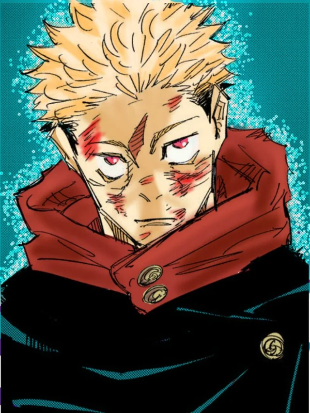
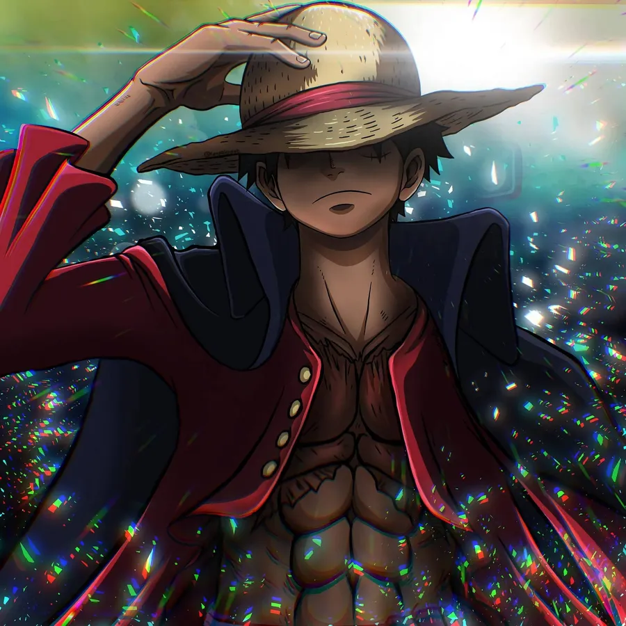
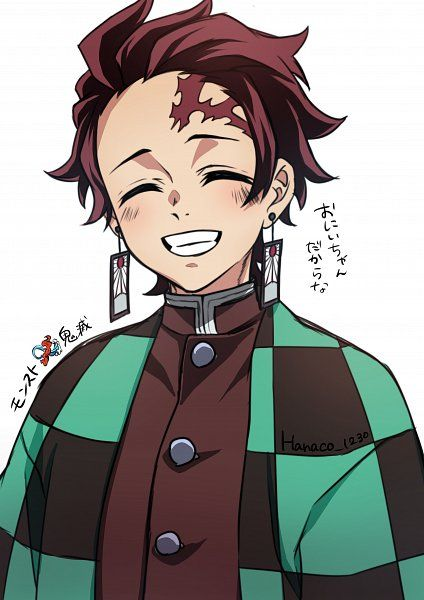
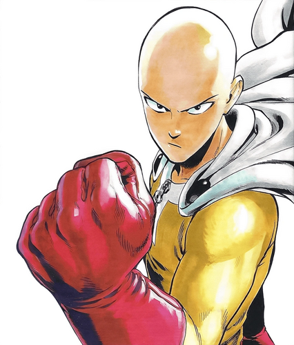

Início
Contato
Personagens de Anime
Itadori — Jujutsu Kaisen

Ver página do Itadori
Luffy — One Piece

Ver página do Luffy
Tanjiro Kamado — Demon Slayer

Ver página do Tanjiro
Kira — Death Note
Ver página do Kira
Saitama — One Punch Man

Ver página do Saitama